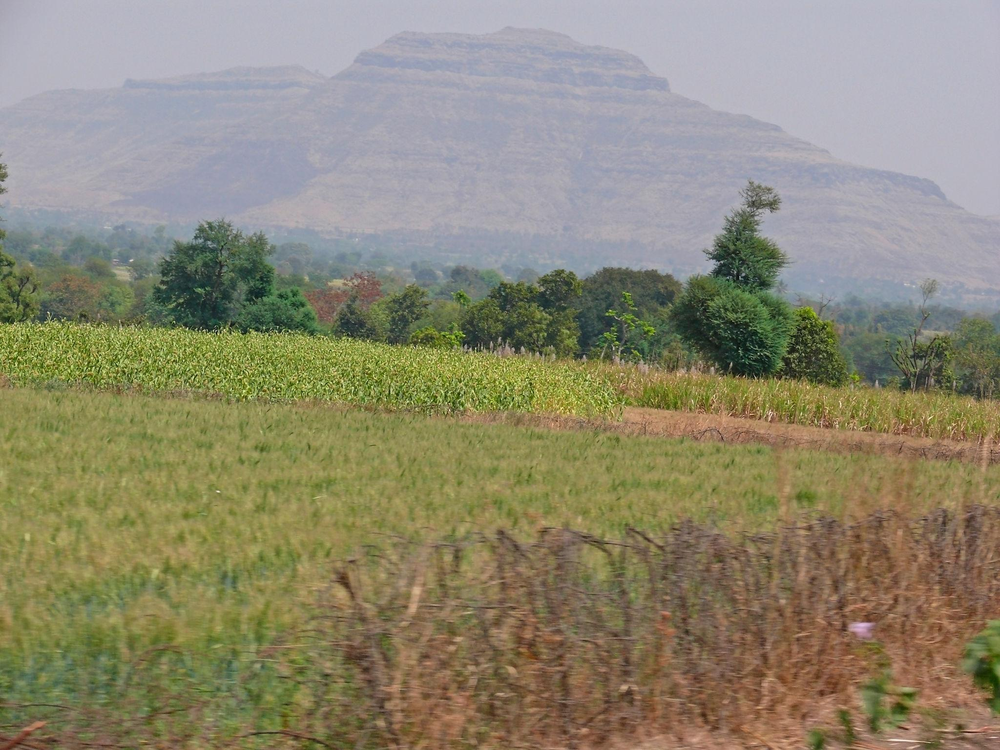

About Kalwan
Kalwan is a beautiful region located in Nashik district of Maharashtra, India. Surrounded by hills, rivers, and fertile land, it is known for its peaceful environment and strong cultural roots. Whether you are a traveler, student, or local resident, Kalwan offers something meaningful to explore.
A beautiful region in Nashik district, Maharashtra, known for its rich history, natural beauty, and agriculture. Kalwan is a tehsil in Nashik district, located around 80 km from Nashik city and about 250 km from Mumbai. It is governed by the Kalwan Municipal Council. The region is well known for its natural beauty, religious places, and agricultural strength. The land is rich in black soil, making it ideal for farming. Rivers like Behadi and Girana support irrigation and help farmers grow cash crops. Kalwan is not just a place—it is a lifestyle where tradition and simplicity come together.
Why Visit Kalwan:
- Spiritual destination (Saptashrungi Temple 🙏)
- Adventure trekking (Dhodap Fort 🏔️)
- Rich agriculture and rural beauty 🌾
- Calm and pollution-free environment 🌿
Location: Nashik District, Maharashtra
Area: 859.71 km²
Population: 3.46 Lakhs
Language: Marathi,Ahirani

Major Villages Of Kalwan
Famous Places Of Kalwan

Culture & Lifestyle
- Farming and agriculture
- Traditional festivals
- Local food and markets